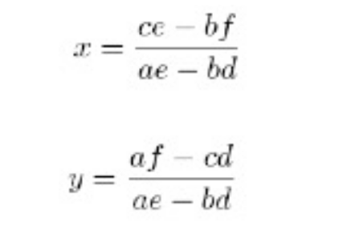
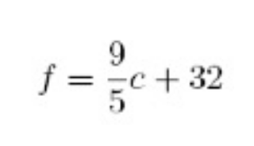
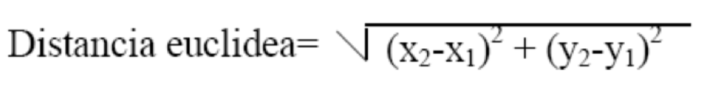
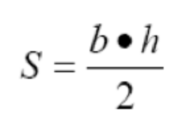
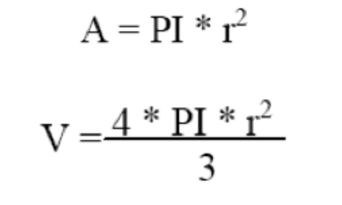
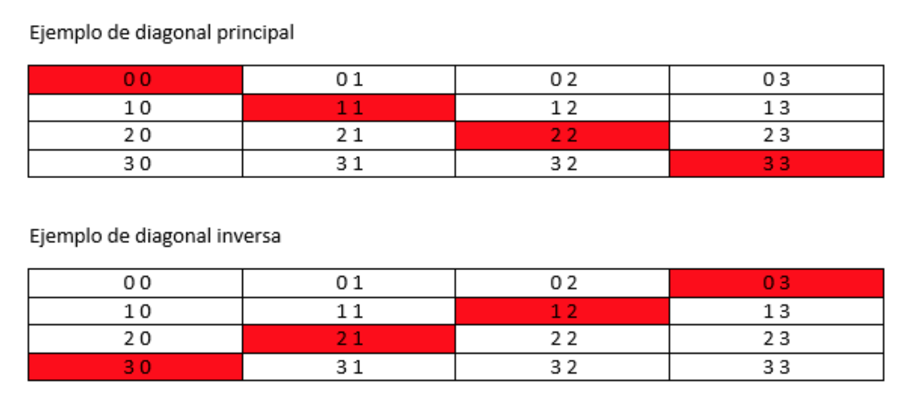

Ejercicios de programación estructurada
| Fecha | Versión | Descripción |
|---|---|---|
| 23/09/2021 | 1.0.0 | Versión inicial. |
| 27/09/2021 | 1.0.1 | Corrección de errores. |
| 14/10/2021 | 1.0.2 | Se añaden ejercicios de matrices |
| 21/09/2025 | 2.0.0 | Revisión. Adaptación |
Ejercicios Unidad 2 - Programación Estructurada
Instrucciones Generales:
- Resuelve cada ejercicio en los formatos indicados:
p(pseudocódigo),df(diagrama de flujo) oj(Java). - Si un ejercicio no especifica de dónde obtener los datos, siempre se deben solicitar por teclado al usuario.
Bloque 1: Repaso de Fundamentos
-
(p, j) Conversor de Unidades: Crea un programa que convierta una medida de pulgadas a centímetros. Debe solicitar al usuario la cantidad de pulgadas y mostrar el resultado.
- Pista: 1 pulgada = 2.54 cm.
-
(p, j) La Potencia Cúbica: Escribe un programa que pida un número al usuario y calcule su cubo (el número multiplicado por sí mismo tres veces).
-
(p, j) Geometría del Cilindro: Necesitamos un programa para una fábrica de envases. Debe calcular el área total y el volumen de un cilindro. Pide al usuario el radio y la altura.
- Fórmula Volumen:
V = PI * r² * h - Fórmula Área:
A = 2 * PI * r * h + 2 * PI * r²
- Fórmula Volumen:
-
(df, j) El Teorema de Pitágoras: Diseña un programa que calcule la hipotenusa de un triángulo rectángulo. El usuario introducirá el valor de los dos catetos.
- Fórmula:
hipotenusa² = cateto1² + cateto2²
- Fórmula:
-
(df, j) Conversor Imperial: Desarrolla un programa que convierta una distancia en metros a pies y pulgadas. El usuario debe introducir la cantidad de metros.
- Pista: 1 metro = 39.27 pulgadas; 1 pie = 12 pulgadas.
-
(p, df, j) El Juego de los Vasos: Imagina que tienes tres vasos (variables A, B, C). Debes intercambiar sus contenidos de la siguiente manera: B toma el valor de A, A toma el valor de C, y C toma el valor de B. ¿Cómo lo harías sin perder el contenido original?
- Pista: Puede que necesites un vaso auxiliar.
Bloque 2: Estructuras Condicionales
-
(df, j) ¿Par o Impar?: Crea un programa que pida un número entero y determine si es par o impar, mostrando un mensaje claro al usuario.
-
(p, j) Filtrando Pares: Escribe un programa que pida dos números enteros. Después, debe mostrar en pantalla todos los números pares que se encuentren en el rango entre esos dos números. (NOTA: este ejercicio necesita estructuras repetitivas).
-
(p, j) Producto de Positivos: Diseña un programa que lea 5 números por teclado y calcule el producto de todos aquellos que sean positivos. Si un número no es positivo, simplemente se ignora.
-
(p, j) División Segura: Pide dos números al usuario (asegúrate de que no sean cero). Realiza la división decimal del primero entre el segundo y muestra el resultado.
-
(df, j) El Ordenador de Números: Pide al usuario tres números enteros y muéstralos en pantalla ordenados de menor a mayor.
-
(df, j) Mini-Calculadora: Pide dos números y muestra el resultado de su suma, producto y división. ¡Cuidado! Si el segundo número es cero, la división no es posible. En ese caso, muestra un mensaje de error en lugar de intentar la operación.
-
(p, j) Calculadora de Superficies: Tu programa debe calcular el área de un rectángulo. Pide al usuario la base y la altura y muestra el resultado.
- Fórmula:
área = base * altura
- Fórmula:
-
(p, j) El Detector de Signo: Pide un número y dile al usuario si es "Positivo" o "Negativo". (Considera el cero como positivo).
-
(p, j) Resolviendo Ecuaciones: Un sistema de ecuaciones lineales (
ax + by = c,dx + ey = f) se puede resolver con las fórmulas de Cramer. Tu programa debe pedir los coeficientes (a, b, c, d, e, f) y calcular los valores dexey.
-
(p, j) Conversor de Temperatura: Crea un programa que convierta una temperatura de grados Celsius a Fahrenheit.

-
(df, j) Detector de Años Bisiestos: Escribe un programa que pida un año y determine si es bisiesto.
- Reglas: Un año es bisiesto si es divisible por 4, excepto si es divisible por 100, a menos que también sea divisible por 400. (Ej: 2000 es bisiesto, 1900 no lo es).
-
(df, j) Calendario Mensual: Pide al usuario un número de mes (del 1 al 12) y, usando una estructura
switch, muestra cuántos días tiene ese mes. (No te preocupes por los años bisiestos). -
(df, j) Taquilla del Fútbol: Programa el sistema de precios de un partido de fútbol sala según la edad:
- Menores de 5 años: Gratis
- Entre 5 y 15 años: 2€
- Mayores de 15 años: 3€
-
(p, j) Calificador de Exámenes: Pide la nota de un examen (0-10) y el sexo del alumno ('H' o 'M'). El programa debe mostrar la calificación adaptada al género:
- < 5: SUSPENSO / SUSPENSA
- >= 5 y < 7: APROBADO / APROBADA
- >= 7 y < 9: NOTABLE
- >= 9: SOBRESALIENTE
-
(p, j) Clasificador de Triángulos: Pide al usuario las longitudes de los tres lados de un triángulo y determina si es:
- Equilátero: 3 lados iguales.
- Isósceles: 2 lados iguales.
- Escaleno: Ningún lado igual.
-
(p, j) Gestor de Notas: Pide las 4 notas de un alumno, calcula su promedio y muestra un mensaje indicando si ha "Aprobado" o "Suspendido". Se aprueba con un promedio de 4.5 o más.
-
(df, j) Evaluación de Nivel: Un programa para corregir tests debe calcular el porcentaje de aciertos. Pide el total de preguntas y el número de respuestas correctas. Luego, muestra el nivel:
- >= 90%: Muy Bueno
- >= 70% y < 90%: Bueno
- >= 50% y < 70%: Regular
- < 50%: Malo
-
(p, j) Distancia Euclidiana: Calcula la distancia entre dos puntos en un plano (P1 y P2). Pide al usuario las coordenadas (x1, y1) y (x2, y2).

-
(df, j) Asignador de Colores: Pide al usuario que introduzca un carácter y, según la letra, muestra el color asignado (ignora si es mayúscula o minúscula):
- 'r': ROJO
- 'v': VERDE
- 'a': AZUL
- 'n': NEGRO
Bloque 3: Estructuras Repetitivas y Vectores
-
(df, j) La Tabla de Multiplicar: Pide un número y muestra su tabla de multiplicar completa (del 0 al 10).
-
(p, j) Suma hasta Negativo: El programa debe leer números hasta que el usuario introduzca uno negativo. En ese momento, mostrará la suma de todos los números positivos introducidos.
-
(df, j) Calculadora de Factorial: Pide un número entero y calcula su factorial (el producto de todos los enteros positivos desde 1 hasta ese número).
-
(p, j) Filtrando Positivos: Pide al usuario una serie de números (positivos o negativos). El programa terminará cuando se introduzca un 0 y mostrará en pantalla solo los números positivos que se leyeron.
-
(p, j) Filtro Numérico Avanzado: Lee 10 números por teclado y al final, muestra una lista con:
- Los números positivos menores que 5.
- Los números negativos mayores que -5.
-
(df, j) Suma y Producto de Pares: Calcula y muestra la suma y el producto de los 100 primeros números pares (2, 4, 6, ..., 200).
-
(p, j) Super Tabla de Multiplicar: Muestra las tablas de multiplicar de los 10 primeros números (del 1 al 10).
-
(p, j) Suma Selectiva: Pide números enteros positivos. El programa se detiene si se introduce un número menor o igual a 0. Al final, muestra la suma total de los números pares y la suma total de los impares.
-
(p, j) Calculadora de Triángulos Interactiva: Calcula la superficie de un triángulo.
- Validación: Asegúrate de que la base y la altura introducidas sean positivas. Si no, vuelve a pedirlas.
- Repetición: Después de mostrar el resultado, pregunta al usuario si desea calcular otra superficie. El programa se repetirá hasta que responda que no.

-
(df, j) Menú Geométrico: Crea un programa con un menú que permita al usuario elegir entre:
- Calcular el área de una circunferencia.
- Calcular el volumen de una esfera.

-
(p, df, j) El Cajero Automático: Dado un importe en euros, calcula el desglose en el menor número de billetes posible (de 500€ a 5€).
-
(p, j) Calculadora de Figuras Planas: Diseña un programa con un menú para calcular el área y el perímetro de: círculo, rectángulo, cuadrado, rombo y triángulo. El usuario debe poder realizar varios cálculos sin reiniciar el programa.
-
(p, j) Potencias en un Rango: Pide dos números al usuario y muestra el cuadrado y el cubo de todos los números enteros que hay entre ellos.
-
(p, df, j) Menú Anidado de Juegos: Crea un programa que muestre un menú principal. Según la opción elegida, debe mostrar los juegos de esa categoría o un submenú si es necesario.
- Juegos de salón:
cartas, ajedrez, damas, prendas. - Juegos al aire libre:
- a) Individuales:
atletismo, senderismo, natación - b) Colectivos:
gimnasia, rítmica, rugby, polo, futbol.
- a) Individuales:
- Salir
- Juegos de salón:
-
(p, j) La Serie Numérica: Calcula la suma de la serie
2 + 5 + 8 + 11 + ...para todos los valores menores que 100. Resuelve el problema usando tres bucles diferentes:while,do-whileyfor. -
(p, j) Simulador de la Primitiva: ¡Vamos a crear un juego!
- Pide al usuario 6 números (del 1 al 49) para su boleto.
- Genera 6 números aleatorios (del 1 al 49, sin que se repitan) para la combinación ganadora.
- Genera un reintegro aleatorio (del 0 al 9).
- Compara y muestra el número de aciertos.
- Pregunta si quiere volver a jugar.
-
(df, j) Brain Training: Simula un juego de cálculo mental.
- Realiza 20 operaciones aleatorias (+, -, *, /) con dos números aleatorios (del 1 al 10).
- Pide el resultado al usuario en cada operación.
- Si acierta, suma un punto.
- Al final, muestra el porcentaje de aciertos.
-
(df, j) ¿Quién es el Director?: Un juego de cine.
- Almacena en dos vectores paralelos 5 películas y sus directores.
- El programa elige una película al azar y se la muestra al usuario.
- El usuario debe escribir el nombre del director.
- El usuario empieza con 5 vidas. Si falla, pierde una.
- El juego termina si se queda sin vidas o si decide no continuar.
- Al final, muestra el porcentaje de aciertos.
Bloque 4: Retos Combinados
-
(p, j) Máquina Expendedora: Programa el software de una máquina que vende un producto a 2,10€.
- Pide al usuario que introduzca dinero.
- Si el dinero es insuficiente, muestra un mensaje de error.
- Si es suficiente, calcula el cambio a devolver usando el menor número de monedas posible (dispones de monedas de 50, 20, 10 y 5 céntimos).
-
(df, j) Ordenador Universal: Pide tres números al usuario. Luego, pregúntale si quiere ordenarlos "de mayor a menor" o "de menor a mayor" y muestra el resultado. El programa debe permitir repetir la operación con nuevos números.
-
(p, j) Calculadora de Salario Neto: Calcula el salario neto semanal de un trabajador a partir de las horas trabajadas.
- Tarifa normal: 8€/hora (para las primeras 35 horas).
- Horas extra: Se pagan un 50% más que la tarifa normal.
- Impuestos:
- Los primeros 600€ del salario bruto están exentos.
- Los siguientes 400€ tienen una tasa del 25%.
- El resto tiene una tasa del 45%.
- El programa debe mostrar: salario bruto, total de impuestos y salario neto.
-
(df, j) Facturación de Hotel: Calcula la factura de un cliente. Pide el número de días de estancia y la categoría de la habitación.
- Categoría A: 200€/día
- Categoría B: 180€/día
- Categoría C: 120€/día
- Categoría D: 80€/día
-
(p, j) Simulador de Amortización de Préstamo: Una persona pide un préstamo de P euros y lo devuelve en cuotas mensuales de A euros, con un interés anual. El programa debe calcular y mostrar para cada mes: el interés pagado, cuánto se reduce la deuda, el total de intereses pagados hasta la fecha, la deuda pendiente, y el número total de pagos necesarios (el último podría ser menor).
- Datos de prueba: Préstamo de 6000€, cuota de 135€, interés del 12% anual.
-
(df, j) Facturación de Alquiler de Coches: Una empresa de alquiler de coches cobra según los kilómetros recorridos. Calcula la factura final.
- 10-100 Km: 2 €/Km.
- 101-999 Km: 1.50 €/Km.
- >= 1000 Km: 1 €/Km.
-
(p, j) Sistema de Acceso Seguro: Crea un programa que gestione el acceso a un sistema mediante una contraseña de 4 dígitos. Debe presentar un menú:
- Introducir contraseña.
- Cambiar contraseña (requiere la contraseña antigua).
- Acceder al sistema (solo si la contraseña es correcta).
- Salir.
-
(df, j) Gestor de Nóminas de Empresa: Diseña un programa que calcule la nómina de un empleado. Pide su nombre, categoría, año de ingreso y horas trabajadas. Debe mostrar un desglose del sueldo.
- Categorías y precio/hora: Administrativo (5€), Técnico (7€), Profesional (12€), Operario (3€).
- Horas extra: Se pagan un 50% más.
- Antigüedad: Un % extra sobre el sueldo base (5% para 1-3 años, 10% para 4-6, etc.).
- Descuentos: 3% por obra social y 10% por jubilación sobre el sueldo base.
-
(p, j) Emulador de Calculadora Científica: Crea una calculadora con un menú para operaciones básicas (suma, resta, producto, división) y complejas (potencia, raíz cuadrada). El programa debe ser robusto y controlar posibles errores de entrada de datos.
Bloque 5: Matrices
-
(j) Tablero Numérico: Crea una matriz de 3x3 y rellénala con los números del 1 al 9. Luego, muéstrala por pantalla en su formato de tabla.
-
(j) Matriz Aleatoria: Pide al usuario el número de columnas para una matriz de 5 filas. Rellénala con números aleatorios entre 0 y 10 y muéstrala.
-
(j) Suma de Matrices: Pide al usuario las dimensiones de dos matrices cuadradas (nxn). Luego, solicita todos los valores para ambas. Calcula la suma de las dos matrices y guarda el resultado en una tercera matriz. Muestra las tres matrices al final.
-
(j) Analizador de Matrices: Crea un programa con un menú para analizar una matriz de 4x4:
- Rellenar Matriz: Pide al usuario todos los valores de la matriz. (Esta opción debe completarse primero).
- Suma de Fila: Pide un número de fila y muestra la suma de sus elementos.
- Suma de Columna: Pide un número de columna y muestra la suma de sus elementos.
- Suma Diagonal Principal: Suma los elementos donde el índice de fila y columna son iguales.
- Suma Diagonal Inversa: Suma los elementos de la diagonal secundaria.
- Media Total: Calcula la media de todos los valores de la matriz.

-
(j) Matriz sin Repeticiones: Genera una matriz de 3x3 con números aleatorios entre 1 y 9, asegurándote de que ningún número se repita.
-
(j) Simulador de Máquina Expendedora v2.0: Gestiona una máquina de golosinas usando matrices.
- Usa una matriz para los nombres, otra para los precios y otra para las cantidades. Puedes usar estos datos de ejemplo para empezar:
- Menú de opciones:
- Pedir Golosina: El usuario introduce un código de dos dígitos (fila y columna). Si hay stock y tiene dinero suficiente, se realiza la venta.
- Mostrar Golosinas: Muestra el código, nombre y precio de todos los productos.
- Rellenar Golosinas (Técnico): Pide una contraseña. Si es correcta, permite aumentar el stock de una golosina.
- Apagar Máquina: Muestra las ventas totales y termina el programa.
- Usa una matriz para los nombres, otra para los precios y otra para las cantidades. Puedes usar estos datos de ejemplo para empezar: